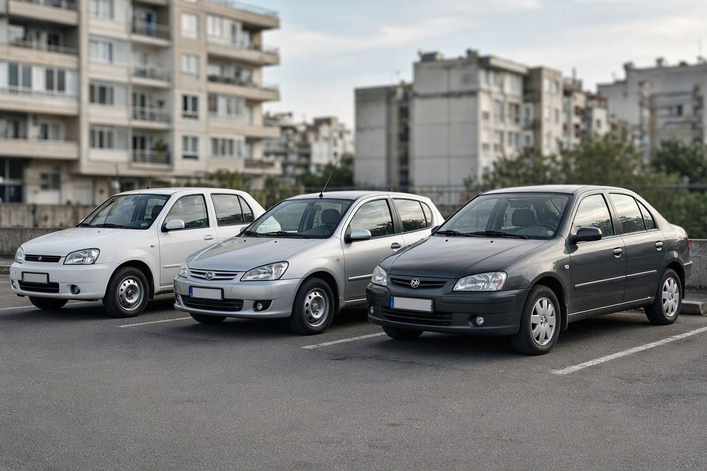
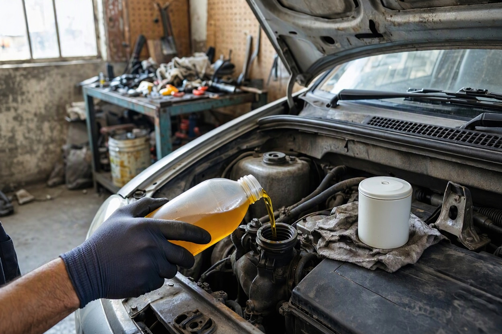
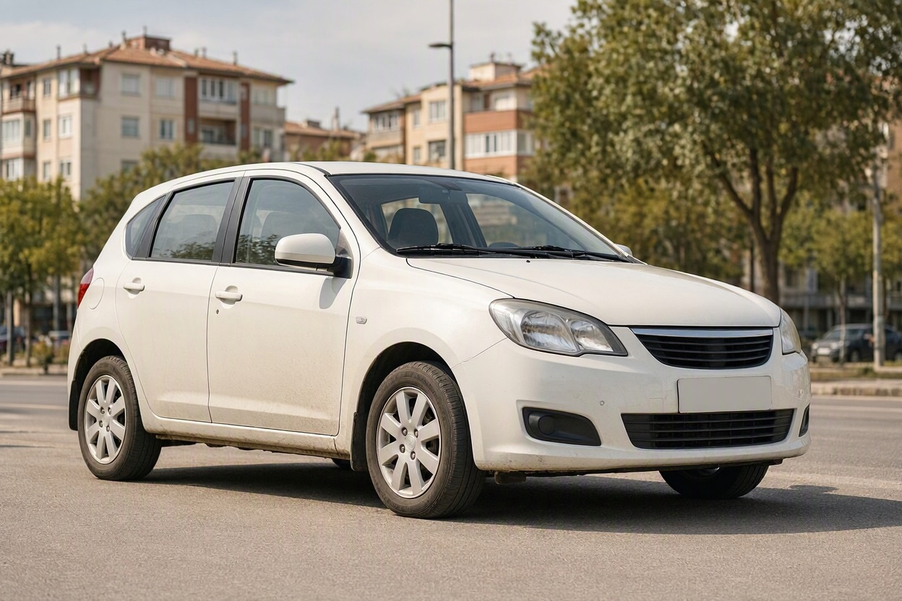
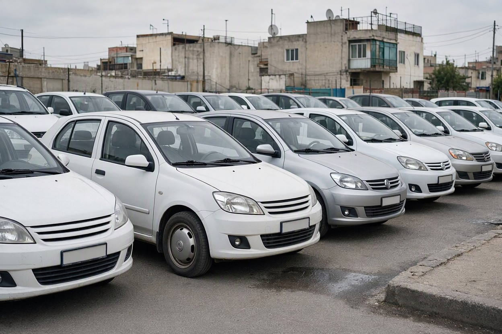

کم استهلاک ترین خودروهای ایرانی کدامند؟ مقایسه هزینه نگهداری با داده بازار ۱۴۰۵
دو خودرو با قیمت خرید نزدیک به هم را در نظر بگیرید: یک تیبا و یک رانا. هر دو مصرف سوختی حدود هفت لیتر دارند و روی کاغذ تفاوت زیادی ندیده میشود. اما وقتی نوبت تعویض کیت تسمه تایم برسد، طبق قیمتهای مهر ۱۴۰۵، هزینه رانا تقریباً دو و نیم برابر تیبا درمیآید.
کم استهلاک ترین خودروهای ایرانی را باید با همین نوع عددها شناخت، نه با شهرت. در این مقاله که تیم مجموعه کارماچک آماده کرده، هزینه سرویس پایه، هزینه تسمه تایم، مصرف سوخت اعلامی و نقدشوندگی خودروهای داخلی پرتعداد را کنار هم گذاشتهایم تا ببینید کدام مدل در عمل کمخرجتر است و عدد هر ادعا از کجا آمده.
بر اساس قیمتهای مهر ۱۴۰۵، کم استهلاک ترین خودروهای ایرانی از نظر هزینه نگهداری، خانواده تیبا، ساینا و کوییک و پس از آن پراید هستند؛ سرویس پایه آنها حدود ۳.۴ میلیون تومان و کیت تسمه تایم با اجرت حدود ۴ تا ۴.۶ میلیون تومان است. پژو ۲۰۶ تیپ ۲، پارس با موتور TU5 و سمند EF7 در رده بعدی قرار میگیرند.
خلاصه در یک دقیقه
- سرویس پایه (روغن، فیلتر و اجرت) خودروهای اقتصادی داخلی در مهر ۱۴۰۵ از حدود ۳.۴ میلیون تومان شروع میشود و برای دنا پلاس توربو به حدود ۶.۱ میلیون میرسد.
- تفاوت اصلی در قطعات دورهای بزرگتر است: تعویض تسمه تایم پراید حدود ۴ میلیون و رانا حدود ۱۱.۴ میلیون تومان برآورد شده است.
- کممصرف بودن به معنای کمخرج بودن نیست؛ رانا و ال ۹۰ مصرف معقولی دارند اما قطعات دورهای گرانتری دارند.
- نقدشوندگی هم بخشی از استهلاک است؛ پژو ۲۰۶ تیپ ۲ در گزارش ۱۴۰۴ خودرو۴۵ بیشترین سهم معاملات را داشته است.
- این عددها برای مقایسه مدلهاست؛ هزینه واقعی هر خودرو به وضعیت همان دستگاه بستگی دارد.
استهلاک خودرو دقیقاً یعنی چه؟
در بازار ایران، «کماستهلاک» معمولاً به خودرویی گفته میشود که نگهداریاش ارزان است: سرویس دورهای کمهزینه، قطعه فراوان، تعمیر ساده و خرابی کم. استهلاک در این معنا یعنی مجموع هزینهای که خودرو در طول استفاده روی دست مالک میگذارد.
برای مقایسه منصفانه، چهار شاخص را جدا بررسی کردهایم:
- هزینه سرویس پایه: روغن، فیلتر روغن و اجرت که هر چند هزار کیلومتر تکرار میشود.
- هزینه قطعات دورهای بزرگ: مثل کیت تسمه تایم که فاصله تعویض طولانی دارد اما مبلغش سنگین است.
- مصرف سوخت: هزینه ثابتی که با هر کیلومتر رانندگی پرداخت میشود.
- نقدشوندگی: اینکه خودرو چقدر سریع و با چه افتی فروخته میشود.
هزینه سرویس پایه خودروهای ایرانی در مهر ۱۴۰۵
سرویس پایه پرتکرارترین هزینه نگهداری است. جدول زیر بر اساس گزارش نبض قیمت در یکم مهر ۱۴۰۵ تنظیم شده و شامل روغن، فیلتر روغن و اجرت تعویض است.

| خودرو | حجم روغن | هزینه تقریبی سرویس پایه (تومان) |
|---|---|---|
| پراید (۱۱۱، ۱۳۱، ۱۳۲، ۱۵۱) | ۳.۵ لیتر | ۳,۴۴۰,۰۰۰ |
| تیبا، ساینا، کوییک | ۳.۷ لیتر | ۳,۴۶۰,۰۰۰ |
| پژو ۲۰۶ و ۲۰۷ | ۳.۴ لیتر | ۳,۶۷۰,۰۰۰ |
| رانا | ۳.۴ لیتر | ۳,۶۷۰,۰۰۰ |
| شاهین | ۴.۲ لیتر | ۳,۸۰۰,۰۰۰ |
| پژو ۴۰۵ و سمند LX | ۴.۵ لیتر | ۳,۹۴۵,۰۰۰ |
| سمند EF7 و دنا | ۴.۲ لیتر | ۴,۰۲۰,۰۰۰ |
| تارا | ۴ لیتر | ۴,۲۰۰,۰۰۰ |
| دنا پلاس توربو | ۴.۲ لیتر | ۶,۱۰۰,۰۰۰ |
اختلاف خودروهای اقتصادی در سرویس پایه کم است؛ فاصله پراید تا تارا حدود ۷۶۰ هزار تومان است. جهش اصلی در موتورهای توربو دیده میشود که روغن با گرید بالاتر میخواهند. گزارشهای دیگر بازار هم برای سرویس سبک پراید و تیبا در مهر ۱۴۰۵ بازهای از حدود ۲.۴ تا ۵.۵ میلیون تومان ذکر کردهاند؛ عدد نهایی به برند روغن و اجرت تعمیرگاه بستگی دارد.
هزینه تسمه تایم؛ جایی که فاصله ها بزرگ می شود
اگر سرویس پایه تفاوت زیادی نشان نمیدهد، قطعات دورهای بزرگ چهره واقعی استهلاک را نشان میدهند. تسمه تایم نمونه خوبی است، چون تقریباً همه مالکان دیر یا زود با آن روبهرو میشوند و جاماندنش میتواند به موتور آسیب جدی بزند.
| خودرو | اجرت (تومان) | قیمت نمونه کیت (تومان) | جمع تقریبی (تومان) |
|---|---|---|---|
| پراید | ۱,۶۹۴,۰۰۰ | ۲,۳۱۸,۰۰۰ | ۴,۰۱۲,۰۰۰ |
| تیبا، تیبا ۲، ساینا، کوییک | ۱,۶۹۴,۰۰۰ | ۲,۹۰۰,۰۰۰ | ۴,۵۹۴,۰۰۰ |
| پژو ۴۰۵، پارس، سمند XU7 | ۲,۴۲۰,۰۰۰ | ۲,۸۳۴,۰۰۰ | ۵,۲۵۴,۰۰۰ |
| اطلس و سهند | ۱,۶۹۴,۰۰۰ | ۴,۶۰۰,۰۰۰ | ۶,۲۹۴,۰۰۰ |
| ال ۹۰ | ۲,۴۲۰,۰۰۰ | ۷,۱۴۶,۰۰۰ | ۹,۵۶۶,۰۰۰ |
| رانا | ۲,۴۲۰,۰۰۰ | ۸,۹۹۰,۰۰۰ | ۱۱,۴۱۰,۰۰۰ |
اعداد این جدول از گزارش نبض قیمت در دوم مهر ۱۴۰۵ گرفته شده و به نزدیکترین هزار تومان گرد شده است. قیمت کیت به برند قطعه وابسته است؛ فرارو در چهاردهم مهر ۱۴۰۵ قیمت کیت کامل تسمه تایم تیبا، ساینا و کوییک را بین ۲.۴۵ تا ۵.۶۸ میلیون تومان گزارش کرده است.
مصرف سوخت اعلامی خودروهای داخلی
مصرف سوخت هزینه ثابت هر کیلومتر است. ارقام زیر مصرف ترکیبی اعلامی خودروسازها هستند که پدال در سال ۱۳۹۶ از سایت رسمی ایرانخودرو و سایپا جمعآوری کرده و برای تارا از مشخصات فنی منتشرشده این مدل استفاده شده است. مصرف واقعی در ترافیک شهری معمولاً بیشتر از عدد اعلامی است.
| خودرو و موتور | مصرف ترکیبی اعلامی (لیتر در ۱۰۰ کیلومتر) |
|---|---|
| پژو ۲۰۶ تیپ ۲ | ۶.۴ |
| پراید (۱۱۱، ۱۳۱، ۱۳۲، ۱۴۱) | ۶.۴۴ |
| رانا | ۶.۹ |
| تیبا | ۶.۹۵ |
| تارا دستی (TU5P) | ۷.۰۶ |
| پژو پارس و ۴۰۵ با موتور TU5 | ۷.۵ |
| سمند LX با موتور EF7 | ۷.۵۴ |
| دنا | ۷.۷۴ |
| سمند LX با موتور XU7 | ۸.۳۴ |
| پژو ۴۰۵ با موتور XU7 | ۹.۰ |
| پژو پارس با موتور XU7 | ۹.۱ |
نکته مهم جدول، فاصله دو موتور یک خودروست. پارس با موتور TU5 حدود ۱.۶ لیتر در هر صد کیلومتر کمتر از پارس XU7 مصرف میکند. اگر بین این دو مردد هستید، نوع موتور از سال و رنگ مهمتر است.
مدل کم خرج را انتخاب کردید؟ سلامت همان خودرو را بسنجید
عددهای این مقاله برای مدل سالم است. خودرویی که تسمه، کلاچ یا جلوبندی فرسوده دارد، از همان روز اول هزینهاش بالاتر است.
رزرو کارشناسی خودرورتبه بندی کم خرج ترین ماشین های ایرانی
با کنار هم گذاشتن سه جدول بالا، کمخرجترین ماشینهای ایرانی را میتوان در چهار گروه دید. این رتبهبندی بر پایه دادههای هزینه است و کیفیت ساخت، ایمنی و راحتی را نمیسنجد.

۱. تیبا، تیبا ۲، ساینا و کوییک
این چهار مدل پلتفرم و قطعات مکانیکی مشترک زیادی دارند. سرویس پایه حدود ۳.۴۶ میلیون و تسمه تایم حدود ۴.۵۹ میلیون تومان، آنها را کنار پراید در ارزانترین گروه قرار میدهد و مصرف اعلامی تیبا ۶.۹۵ لیتر است. مزیت دیگرشان این است که هنوز در بازار حضور گسترده دارند و قطعهشان کمیاب نمیشود.
۲. پراید
پراید ارزانترین سرویس پایه و ارزانترین تسمه تایم جدولها را دارد. اما پراید سالهاست تولید نمیشود و نمونههای موجود در بازار معمولاً قدیمیترند. در عمل فرسودگی ناشی از سن، بخشی از مزیت قطعه ارزان را خنثی میکند.
۳. پژو ۲۰۶ تیپ ۲ و پژو پارس با موتور TU5
پژو ۲۰۶ تیپ ۲ با مصرف اعلامی ۶.۴ لیتر کممصرفترین خودروی این مقایسه است و سرویس پایهاش حدود ۳.۶۷ میلیون تومان است. پارس TU5 هزینه تسمه تایم حدود ۵.۲۵ میلیون دارد، ولی قطعه و تعمیرکارش تقریباً همهجا پیدا میشود. برای کسی که خودروی بزرگتر میخواهد، پارس TU5 تعادل خوبی میان فضا و هزینه دارد.
۴. سمند EF7 و تارا
سمند EF7 با سرویس پایه حدود ۴.۰۲ میلیون و مصرف ۷.۵۴ لیتر، گزینه منطقی برای خانوادههاست. تارا با موتور TU5P سرویس پایه حدود ۴.۲ میلیون و مصرف اعلامی ۷.۰۶ لیتر دارد. اگر بین تارا و رقیب سایپاییاش مردد هستید، مقایسه فنی و استهلاک تارا و شاهین جزئیات بیشتری دارد.
کدام خودروها کم مصرف هستند اما کم خرج نیستند؟
اشتباه رایج این است که کممصرف بودن را با کماستهلاک بودن یکی بدانیم. دادههای مهر ۱۴۰۵ سه نمونه روشن نشان میدهند:
- رانا: مصرف اعلامی ۶.۹ لیتر، اما کیت تسمه تایم با اجرت حدود ۱۱.۴ میلیون تومان؛ یعنی حدود ۲.۵ برابر تیبا.
- ال ۹۰: به دوام فنی معروف است، اما تعویض تسمه تایم آن حدود ۹.۵۷ میلیون تومان برآورد شده است.
- دنا پلاس توربو: سرویس پایه حدود ۶.۱ میلیون تومان، تقریباً ۱.۸ برابر تیبا، چون موتور توربو روغن گرانتری میخواهد.
این مدلها خودروی بدی نیستند. فقط اگر معیار اصلی شما هزینه نگهداری است، باید این اختلاف را از قبل در بودجه ببینید.
نقدشوندگی و افت قیمت؛ بخش پنهان استهلاک
هزینهای که هنگام فروش از دست میدهید هم بخشی از استهلاک است. خودرویی که خریدار زیادی دارد، سریعتر و با تخفیف کمتری فروخته میشود.

طبق گزارش سالانه ۱۴۰۴ پلتفرم خودرو۴۵، پژو ۲۰۶ تیپ ۲ با ۳.۸ درصد از کل معاملات ثبتشده در صدر بود و پژو پارس و ۲۰۷ در ۱۷ استان بیشترین معامله را داشتند. این داده فقط مربوط به همان پلتفرم است، اما تصویر بازار را نشان میدهد: پژوهای پرتعداد و خانواده سایپا جزو نقدشوندهترین خودروهای داخلیاند.
اثر کارکرد روی قیمت فروش هم مهم است. اگر میخواهید بدانید کیلومتر بالا چقدر از ارزش خودرو کم میکند، افت قیمت خودرو بر اساس کارکرد را ببینید. برای برآورد ارزش یک خودروی مشخص هم قیمتگذاری خودرو کمک میکند.
برای انتخاب خودرو کم استهلاک چه کنیم؟
جدولها فقط نقطه شروعاند. این مراحل کمک میکند انتخاب مدل را به یک خودروی مشخص تبدیل کنید:
- مرحله اول:بودجه سالانه نگهداری را تعیین کنید و مدلهایی را که سرویس و قطعات دورهایشان از آن بیشتر است کنار بگذارید.
- مرحله دوم:در مدلهایی که چند موتور دارند، مثل پارس و سمند، نوع موتور را مشخص کنید؛ اختلاف مصرف میتواند بیش از یک و نیم لیتر باشد.
- مرحله سوم:از فروشنده سابقه تعویض تسمه تایم، کلاچ و لنت را بخواهید و قطعات نزدیک به موعد را در قیمت لحاظ کنید.
- مرحله چهارم:وضعیت واقعی خودرو را بررسی کنید؛ موتور، گیربکس، جلوبندی، رنگ و شاسی.
اگر هنوز درباره انتخاب میان مدلهای دست دوم ارزان مطمئن نیستید، راهنمای خرید ماشین کمخرج دست دوم اشتباهات رایج خریداران را مرور میکند.
کارماچک یک ارائهدهنده خدمات کارشناسی خودرو در ایران است. در کارشناسی ماشین پیش از خرید، فنی، بدنه و قطعات نزدیک به موعد تعویض بررسی میشوند. فقط ایراد خودرو را شناسایی نمیکنیم؛ اثر آن روی هزینه تعمیر و ارزش واقعی معامله را هم مشخص میکنیم.
جمع بندی
با دادههای مهر ۱۴۰۵، کم استهلاک ترین خودروهای ایرانی خانواده تیبا، ساینا و کوییک و پراید هستند؛ پس از آنها پژو ۲۰۶ تیپ ۲، پارس TU5، سمند EF7 و تارا قرار میگیرند. رانا، ال ۹۰ و مدلهای توربو با وجود مصرف معقول، قطعات دورهای یا سرویس گرانتری دارند. عدد مدل را مبنا بگذارید، اما تصمیم نهایی را بر اساس وضعیت همان خودرویی بگیرید که میخواهید بخرید.
قبل از خرید، هزینه های پنهان خودرو را ببینید
بررسی تخصصی نشان میدهد کدام قطعات به موعد تعویض نزدیکاند و خودرو در عمل چقدر خرج روی دستتان میگذارد.
ثبت درخواست کارشناسیسؤالات متداول
کمخرجترین ماشین ایرانی در سال ۱۴۰۵ کدام است؟
بر اساس قیمتهای مهر ۱۴۰۵، پراید و خانواده تیبا، ساینا و کوییک کمترین هزینه نگهداری را دارند. سرویس پایه آنها حدود ۳.۴۴ تا ۳.۴۶ میلیون تومان و تعویض تسمه تایم حدود ۴ تا ۴.۶ میلیون تومان است. بین این دو، خانواده تیبا بهدلیل جدیدتر بودن نمونههای بازار، معمولاً انتخاب کمدردسرتری است.
کممصرفترین خودروی ایرانی کدام است؟
طبق مصرف ترکیبی اعلامی خودروسازها، پژو ۲۰۶ تیپ ۲ با ۶.۴ لیتر و پراید با ۶.۴۴ لیتر در هر صد کیلومتر کممصرفترینها هستند. رانا و تیبا با حدود ۶.۹ لیتر در رده بعدیاند. مصرف واقعی در ترافیک شهری بیشتر است و به سلامت موتور و سبک رانندگی بستگی دارد.
آیا پژو پارس خودرو کماستهلاکی است؟
پارس با موتور TU5 هزینه نگهداری متوسط و قابل مدیریتی دارد: تعویض تسمه تایم آن طبق گزارش مهر ۱۴۰۵ حدود ۵.۲۵ میلیون تومان است و مصرف اعلامیاش ۷.۵ لیتر. قطعه و تعمیرکارش همهجا هست و نقدشوندگی بالایی دارد. نسخه XU7 مصرف بیشتری دارد و از نظر هزینه سوخت گزینه پرخرجتری است.
چرا رانا با وجود مصرف کم، کمخرج حساب نمیشود؟
مصرف اعلامی رانا ۶.۹ لیتر است، اما طبق گزارش مهر ۱۴۰۵ نبض قیمت، کیت تسمه تایم و اجرت تعویض آن حدود ۱۱.۴ میلیون تومان میشود که تقریباً دو و نیم برابر تیبا است. یعنی صرفهجویی در سوخت با هزینه قطعات دورهای تا حدی جبران میشود.
این قیمتها چقدر قابل اعتماد هستند؟
اعداد این مقاله از گزارشهای بازار در مهر ۱۴۰۵ گرفته شده و برای مقایسه مدلها مناسباند، نه برای پیشفاکتور. قیمت روغن و قطعه به برند، شهر و تعمیرگاه بستگی دارد و در بازار ایران بهسرعت تغییر میکند. پیش از سرویس، از تعمیرگاه فاکتور جداگانه قطعه و اجرت بخواهید.
خودرو کماستهلاک دست دوم را چطور انتخاب کنیم؟
اول مدلی با سرویس و قطعات ارزان انتخاب کنید، بعد سراغ وضعیت همان خودرو بروید. سابقه تعویض تسمه تایم، کلاچ و لنت را بپرسید و خودرو را پیش از معامله کارشناسی کنید. یک تیبای فرسوده میتواند از یک خودروی گرانتر اما سالم پرخرجتر باشد.
منابع
- نبض قیمت: هزینه تعویض روغن در خودروهای مختلف (یکم مهر ۱۴۰۵)
- نبض قیمت: هزینه تعویض تسمه تایم خودرو (دوم مهر ۱۴۰۵)
- فرارو: هزینه تعویض قطعات مصرفی تیبا، ساینا و کوییک در سال ۱۴۰۵ (چهاردهم مهر ۱۴۰۵)
- پدال: نگاهی به مصرف سوخت خودروهای داخلی، بر اساس سایت رسمی خودروسازها (۱۳۹۶)
- باما: مشخصات فنی تارا با موتور TU5P
- پدال: گزارش ۱۴۰۴ خودرو۴۵ از معاملات خودرو در استانها